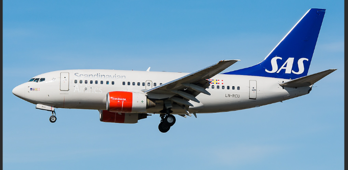
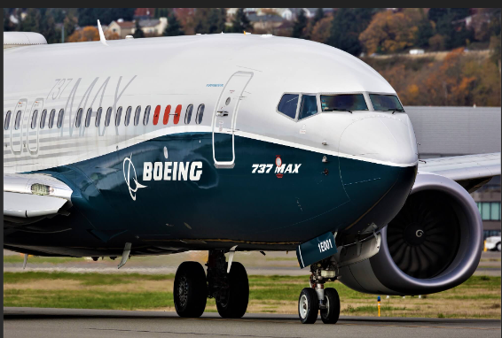

| Group 1 | Group 2 |
|---|---|
|

The Boeing 737-600 is a short to medium-haul aircraft from the Boeing 737 Next Generation family. It typically seats between 108 to 130 passengers and has a range of around 5,648 km (3,510 miles). Powered by two CFM56-7B engines, it can cruise at a speed of Mach 0.785 (850 km/h or 530 mph). The aircraft has a maximum takeoff weight (MTOW) of 65,090 kg (143,500 lbs). Its dimensions include a length of 31.2 meters (102 feet 6 inches), a wingspan of 34.3 meters (112 feet 7 inches) with optional winglets, and a height of 12.5 meters. |

The Boeing 737 MAX is a more efficient version of the 737, seating 138 to 230 passengers with a range of 6,570 to 7,084 km. It is powered by two CFM LEAP-1B engines. However, early safety concerns arose due to the MCAS system, which malfunctioned, leading to two fatal crashes in 2018 and 2019, killing 346 people. The aircraft was grounded and underwent safety upgrades, including software fixes and improved pilot training. Despite these changes, concerns still exist about the aircraft's safety. SO DO NOT RIDE THE UNSIGMA B737MAX, CANCEL FLIGHTS IF U R, ITS VERY DANGEROUS!! |
|
The Boeing 737-800 is a popular member of the 737 Next Generation family, typically seating 162 to 189 passengers. It has a range of about 5,765 km (3,583 miles), making it suitable for short to medium-haul flights. Powered by two CFM56-7B engines, the aircraft has a maximum takeoff weight (MTOW) of 79,015 kg (174,200 lbs) and cruises at around Mach 0.785 (850 km/h or 530 mph). |
The Boeing 737-700 is a member of the 737 Next Generation family, typically seating 126 to 149 passengers. It has a range of about 6,370 km (3,965 miles), making it suitable for short to medium-haul flights. Powered by two CFM56-7B engines, the 737-700 has a maximum takeoff weight (MTOW) of 70,080 kg (154,500 lbs). It cruises at around Mach 0.785 (850 km/h or 530 mph). |